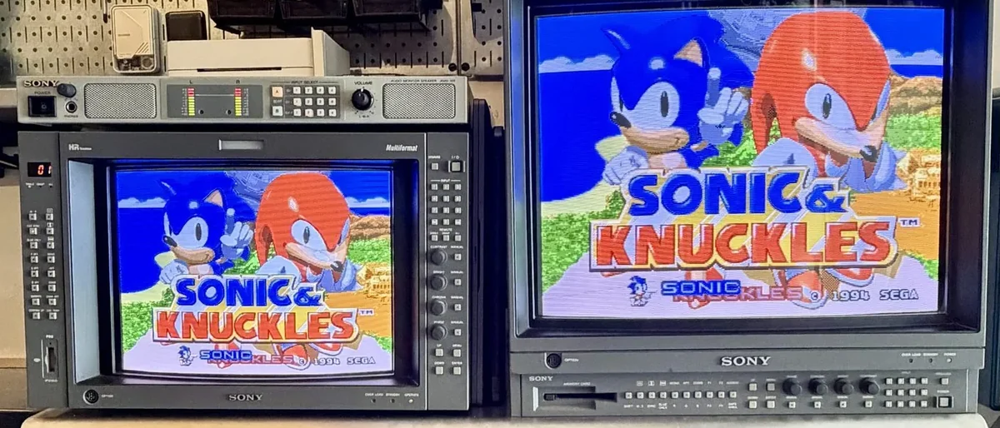
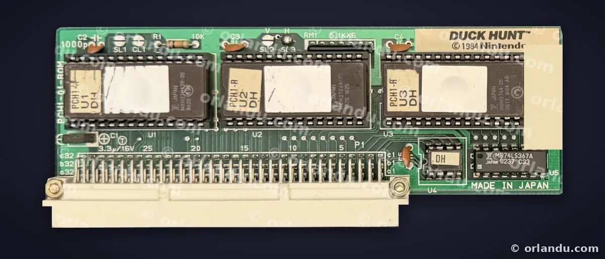
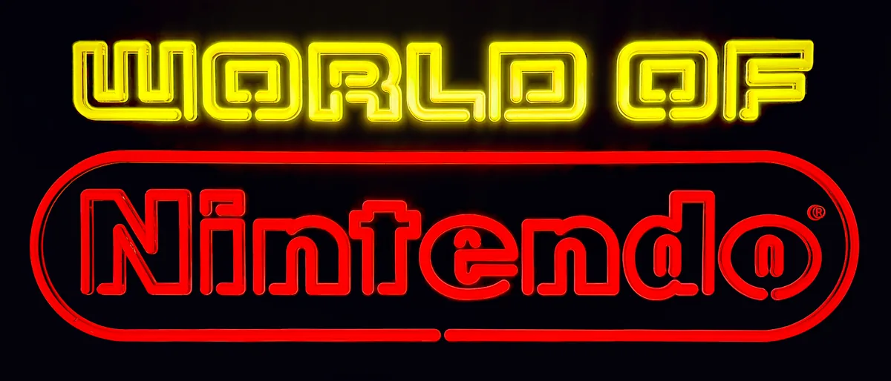
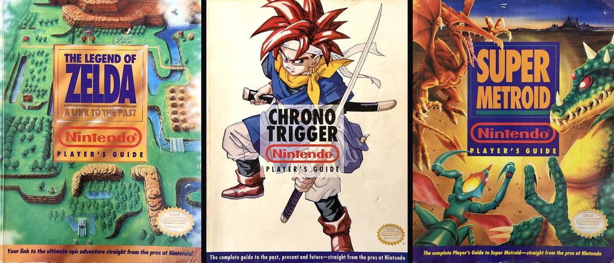
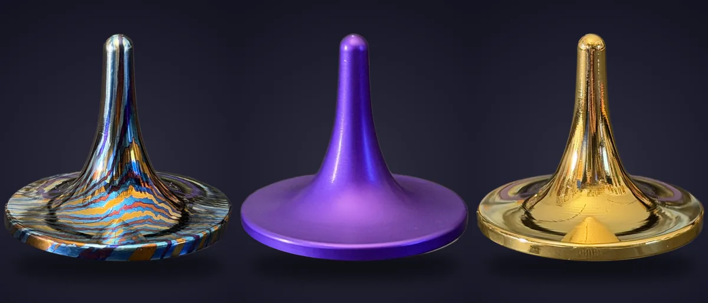
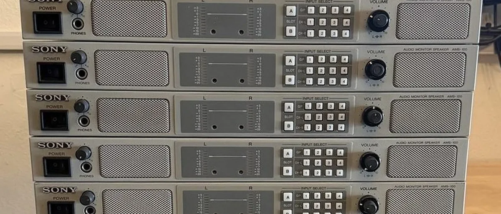
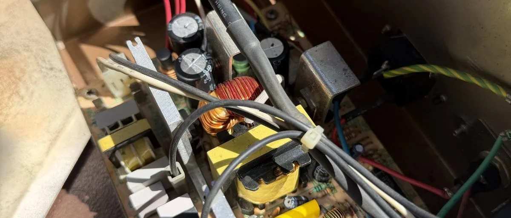
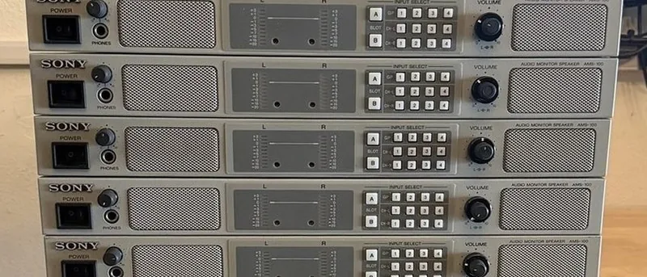
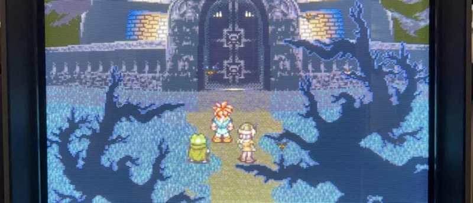
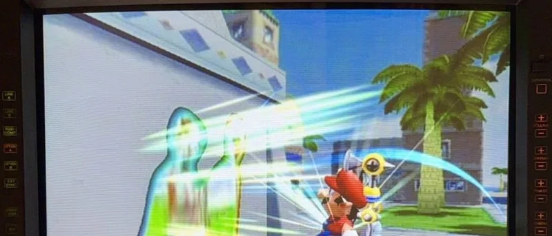

Step inside

Two Rooms of Cabinets & Pinball
The garage arcade with four uprights and the pinball row, plus the inside game room with the candy cab and cocktail — six cabinets and four pins in all.

Sony PVM · BVM · LMD
A working museum of Sony professional video — thirteen units across eight models, documented in the Trinitron Fleet magazine.

Sony BVM & PVM Serial Census
A survivor count of Sony’s professional monitors, kept by the people who own them — 29 monitors from 14 owners so far. Add yours and see where your serial falls in the run.

Nintendo · Sega · NEC · Sony
From front-loader NES to the PC Engine Duo-R and Turbo Express — the home hardware that feeds the CRTs, much of it RGB-modded or restored.

Fifty-Two Game Boards
The whole PlayChoice-10 library as bare green boards, photographed one by one — plus ten conversions and custom builds, and what each label and code tells you.

Toppers, Cards & Lit Retail Signs
Twenty-one original PlayChoice-10 arcade toppers, eighteen NOS VS. instruction cards, and the Nintendo retail signage that told a shop floor what was inside.

Twenty-One Player’s Guides
Nintendo’s official strategy guides, photographed cover by cover — the SNES years, from A Link to the Past to Chrono Trigger.

Sixty Foreverspin Tops
One shape turned in thirty-five metals, from 6 g magnesium to 60 g tungsten, plus twenty-five mystery tops and limited editions — each photographed off its base.

Monographs, Guides & Magazines
Thirteen long reads from the collection — the AMS-100 monograph, the PVM-20L5 buying guide, Trinitron Fleet, the Orlandu 100 and 50, and more.

Current & Completed Projects
Repairs, rebuilds, and restorations — from pinball board swaps to arcade PSU rebuilds and CRT calibration.

Duplicates & Departures
The collection consolidates over time. Monitors and hardware currently listed for sale live here.

The Hunt List
Actively searching: BKM input cards, specific consumer CRTs, and a few white whales. Have one? Get in touch.
The reading room

The Sony AMS-100 Has No Written History
The primary literature on Sony’s modular audio confidence monitor — the frame, the board system, a registry of documented units, and the market record.

Trinitron Fleet, Vol. 1
The interactive magazine on the monitor fleet — every model with its full spec sheet, the battle of the twenties, and how to speak broadcast.

What to Check Before You Buy a PVM-20L5
The geometry grid, judging a tube with no hours counter, what to pay — and why you should drive to it rather than ship it.
Latest from the arcade
The last three consoles, on camera
The NES Front Loader, the Genesis Model 1 and the TurboGrafx-16 were the only cards without a photo. Now every console on the page has one, and the TurboGrafx has its own row in the mod table. See the full roster →
The X’Eye comes home
JVC’s rare Genesis + Sega CD combo is back from a full servicing at iFixRetro — every capacitor on both boards, a new laser, and saves that never die. Read the story →
Double Dribble and Kung Fu
Two more original PlayChoice-10 toppers off the hunt list — Konami’s 1988 Double Dribble and Irem’s 1984 Kung Fu. See them on the topper wall →
The Orlandu Registry
A serial-number census of surviving Sony BVM and PVM monitors, kept by the people who own them. Add yours and see how many of your model are still accounted for. Register a monitor →
Through the mask
Every tube in the fleet simulated from its own numbers — scan-line gap, grille pitch, center resolution — two side by side, with a slider that walks you from the glass to the couch. See through it →
Will it connect?
Pick any console and any monitor in the fleet: the cable chain step by step, the sync and termination rules, which BKM card it needs, and a plain verdict. Ask it →
Operate a BKM-10R
The control unit a BVM-20E1U cannot live without, button by button and menu by menu, with Sony’s own description of what each one does. Press something →
What a Sony model number says
PVM-20L5, BVM-D14H5U, BKM-129X — line, size, tube letter, the digit that means “needs a control unit,” and the market suffix, from Sony’s own manuals, with each family drawn as a lineage strip. Decode a badge →
Compare two monitors, and see them to scale
Pick any two models and the specs that differ light up; above the table, all eight are drawn to Sony’s published dimensions, front and side, with an NES for size. The fleet, to scale →